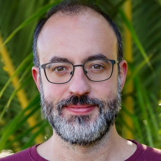
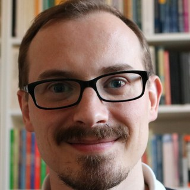

The Aether Team
The Aether survey is carried out by a collaboration of 49 researchers from 28 institutions across 12 countries: the United States, Germany, Italy, Japan, China, the Netherlands, Israel, Chile, France, Switzerland, the United Kingdom, and Slovenia.
Survey leads

Emanuele Paolo Farina
Principal Investigator and Survey Lead
International Gemini Observatory / NSF NOIRLab

Roberto Decarli
Survey Lead
INAF – Osservatorio di Astrofisica e Scienza dello Spazio
Collaboration members
- Fabrizio Arrigoni Battaia – Max Planck Institute for Astrophysics
- Eduardo Bañados – Max Planck Institute for Astronomy
- Aaron J. Barth – University of California, Irvine
- Silvia Belladitta – Max Planck Institute for Astronomy
- Manuela Bischetti – Università di Pisa
- Sarah E. I. Bosman – Heidelberg University
- Rychard Bouwens – Leiden University
- Zheng Cai – Tsinghua University
- Hyunseop Choi – University of Michigan
- Michele Costa – INAF – Osservatorio di Astrofisica e Scienza dello Spazio
- Tiago Costa – Newcastle University
- Frederick Davies – Max Planck Institute for Astronomy
- Gisella De Rosa – Space Telescope Science Institute
- Anna-Christina Eilers – Massachusetts Institute of Technology
- Xiaohui Fan – University of Arizona
- Simona Gallerani – Scuola Normale Superiore di Pisa
- Arpita Ganguly – Heidelberg University
- Radha Gharapurkar – University of Hamburg
- Anniek Gloudemans – NSF NOIRLab
- Thales Gutcke – University of Hawaii
- Joseph Hennawi – University of California, Santa Barbara
- Luca Ighina – Center for Astrophysics | Harvard & Smithsonian
- Xiangyu Jin – University of Arizona
- Brian Lemaux – International Gemini Observatory / NSF NOIRLab
- Weizhe Liu – University of Arizona
- Federica Loiacono – INAF – Osservatorio di Astrofisica e Scienza dello Spazio
- Jianwei Lyu – University of Arizona
- Vladan Markov – University of Ljubljana
- Yoshiki Matsuoka – Ehime University
- Chiara Giulia Mazzucchelli – Diego Portales University
- Romain Alexis Meyer – University of Geneva
- Silvia Onorato – International Gemini Observatory / NSF NOIRLab
- Masafusa Onoue – Waseda Institute for Advanced Study
- Klaudia Protušová – Heidelberg University
- Julia Scharwaechter – International Gemini Observatory / NSF NOIRLab
- Jan-Torge Schindler – University of Hamburg
- Hyewon Suh – International Gemini Observatory / NSF NOIRLab
- Benny Trakhtenbrot – Tel Aviv University
- Maxime Trebitsch – Observatoire de Paris
- Bram Venemans – Leiden University
- Fabio Vito – INAF – Osservatorio di Astrofisica e Scienza dello Spazio
- Fabian Walter – Max Planck Institute for Astronomy
- Feige Wang – University of Michigan
- Julien Wolf – Max Planck Institute for Astronomy
- Yuxuan Wu – INAF – Osservatorio di Astrofisica e Scienza dello Spazio
- Jinyi Yang – University of Michigan
- Siwei Zou – National Astronomical Observatories of China